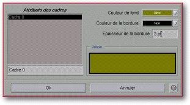

<!-- Documentation XQuad (c)1995-2000 AXENE contact axene@axene.org>
<html>

<head>
<title>Configuration des cadres</title>
</head>

<body BGCOLOR="#FFFFFF" BACKGROUND="Images/back.gif" TEXT="#000000">

<p ALIGN="right">  </p>

<p><br>
<br>
Cette boîte de dialogue permet de modifier certains attributs des cadres. On ne peut
ouvrir cette boîte de dialogue que si un ou plusieurs cadres sont sélectionnés en
'double-cliquant' sur un cadre. <br>
<br>
</p>

<hr>

<p><br>
</p>

<p align="center"> <br>
<small><i>Photo d'écran : Boîte de d'attributs des cadres </i></small></p>

<p><br>
</p>

<hr>

<p><br>
</p>

<h3>Partie gauche de la boîte de dialogue :</h3>

<ul>
  <li><a NAME="frame_list">la <b>liste des cadres</b> affiche les cadres actuellement
    sélectionnés. Chaque cadre est associé à une étiquette qui par défaut est <i>&quot;Cadre
    X&quot;</i> où X est un numéro ou une suite de numéros. Lorsque l'on sélectionne un
    des éléments de la liste, les caractéristiques du cadre correspondant apparaissent à
    droite. Il est possible de sélectionner plusieurs éléments dans la liste grâce à
    l'utilisation de la touche Ctrl. </a></li>
  <li><a NAME="edit_frame_name">le champ texte juste en dessous de la liste permet de <b>modifier
    le nom du cadre</b> sélectionné dans la liste.</a></li>
</ul>

<p><br>
</p>

<h3>Partie droite de la boîte de dialogue :</h3>

<ul>
  <li><a NAME="background_color_list">la liste déroulante <i>&quot;Couleur de fond&quot;</i>
    permet de <b>choisir la couleur de fond</b> du cadre sélectionné dans la liste. Cette
    liste de couleurs est modifiable grâce à la boîte de dialogue '</a><a HREF="Box_Color.html">Préparation des couleurs</a>'. </li>
  <li><a NAME="border_color_list">la liste déroulante <i>&quot;Couleur de la bordure&quot;</i>
    permet de <b>choisir la couleur de la bordure</b> du cadre sélectionné dans la liste.
    Cette liste de couleurs est modifiable grâce à la boîte de dialogue '</a><a HREF="Box_Color.html">Préparation des couleurs</a>'. </li>
  <li><a NAME="thickness_textfield">le champ texte <i>&quot;Epaisseur de la bordure&quot;</i>
    permet de <b>définir l'épaisseur de la bordure</b> en points typographiques. La valeur
    doit être comprise entre 0(pt) et 99(pt). L'épaisseur des cadres ne transparaît pas
    dans la plan d'affichage d'XQuad mais ce paramètre est pris en compte lors de
    l'impression. </a></li>
  <li><a NAME="frame_preview">la <b>zone témoin</b> donne un aperçu d'affichage des
    différents attributs pour un cadre rectangulaire. </a></li>
</ul>

<p><br>
</p>

<h3>Partie inférieure de la boîte de dialogue :</h3>

<ul>
  <li><a NAME="button_ok"><i>&quot;Ok&quot;</i> <b>accepte toutes les modifications</b>
    apportées aux cadres sélectionnés et ferme la boîte. </a></li>
  <li><a NAME="button_cancel"><i>&quot;Annuler&quot;</i> <b>annule toutes les modifications</b>
    et ferme la boîte. </a></li>
</ul>

<p><br>
</p>

<hr>

<p ALIGN="right"></p>
</body>
</html>
